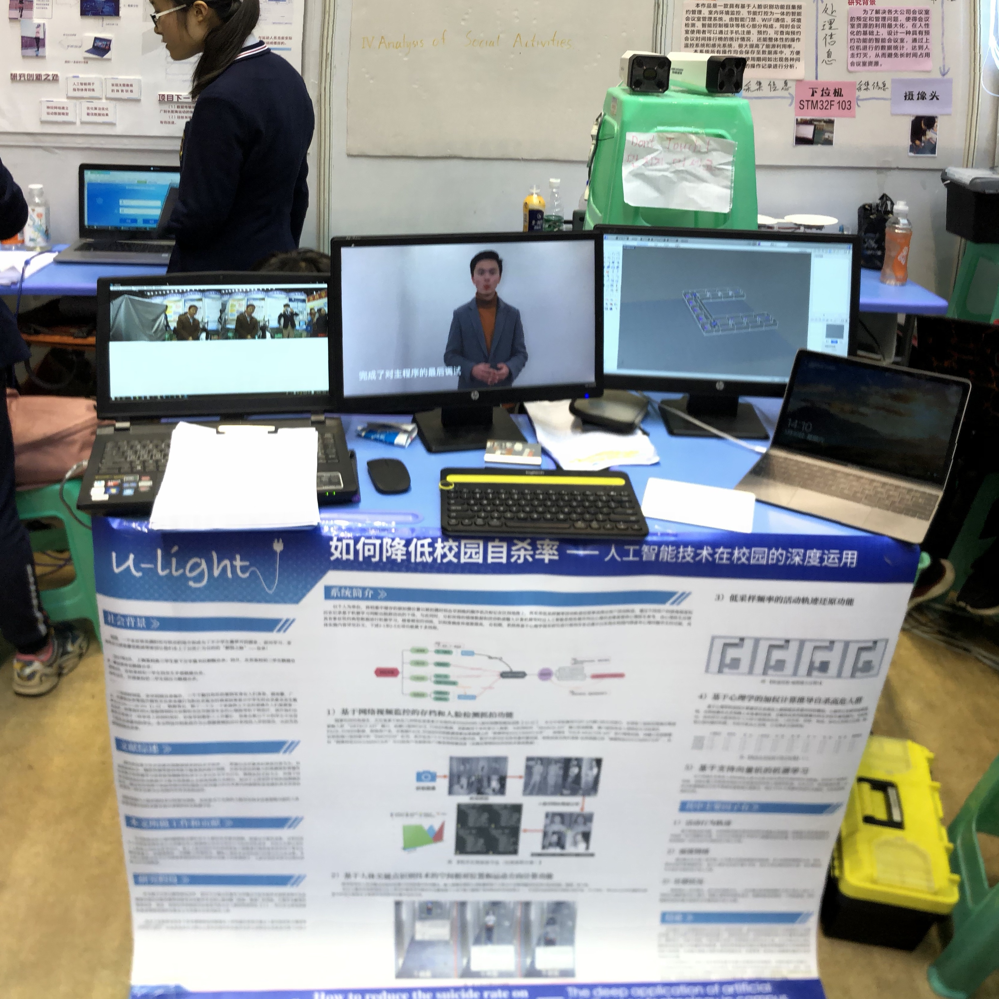
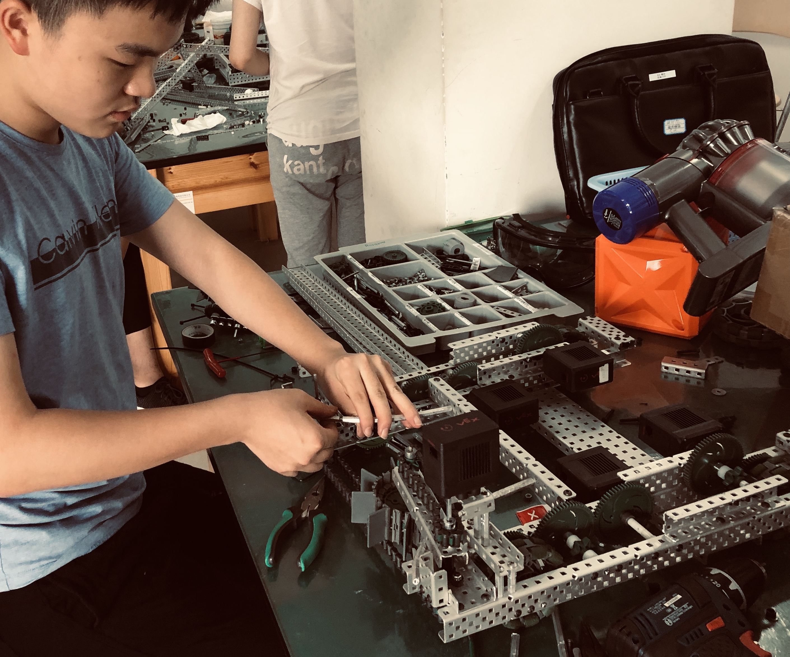
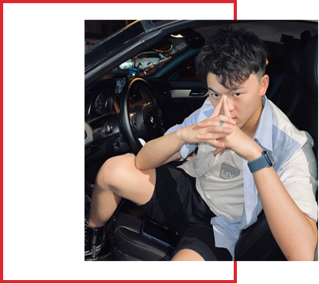

-
Engineering Projects
工程项目
Experienced programmer and product manager, skilled in blending innovative technology with market needs. Accumulated practical experience in a number of successful projects, focus on mining customer needs, to create efficient and practical products. -
Photograph
摄影
Focusing on capturing unique moments in life, it uses keen vision and innovative technology to create compelling visual experiences for customers. Be good at capturing the charm of light and shadow and interpreting the emotion of the story. We are looking forward to working with you to create unique visual arts and keep a good time. -
Filme&TV
影视
Experienced camera operators, DIts, and BTS. Focus on capturing every detail and telling compelling stories. Look forward to working with you to create more inspiration and charm for the film art. -
Tech-Diving
技术潜水
Focus on exploring the deep mysteries of caves and oceans. Accumulated practical experience in diving projects for many years, the pursuit of excellence, the courage to challenge the limits. We invite you to explore the underwater world together and bring more knowledge and beauty to mankind.
Welcome to my personal website. I have rich experience in product design, programming, photography, video and technical diving. I focus on user experience and usability, and on making products that are both beautiful and functional. I'm familiar with multiple programming languages. Ability to develop various types of applications, such as Web applications, mobile applications, and effective back-end development and database management. With years of experience in photography and videography, I am able to use light, shadow, color, composition and other skills to create works with visual impact. In terms of technical diving, I have rich diving experience and am familiar with diving in various environments. As a comprehensive technical personnel, I can provide you with one-stop technical services. If you are interested in my skills and experience, please feel free to contact me and look forward to working with you!
-
- Programing
Python&Java&C++
Proficient in multiple programming languages and development tools, capable of designing, developing, testing and maintaining high quality software products... -
- Photograph
Shooting and Editing
With unique visual creativity and photography skills, we are able to capture and present the most perfect moments of our clients. Proficient in various photographic equipment and post-production software, able to provide high-quality photo and video production services. -
- Film & TV
Camera Operation&AC&DIT
With professional shooting skills and experience, we can provide customized video solutions according to customer needs. With creative and visual expression, it can accurately express the information that customers want to convey through visual language. -
- Tec-Diving
Decompression and cave diving
Have a wide range of technical interests and curiosity, be able to quickly learn and master new technologies, provide valuable technical insight and advice to the team. With excellent problem solving ability, can quickly analyze and solve various technical problems, improve the performance and stability of the system.
2018 August

- Created the school's maker space and recruited 50 students. Started the journey of the maker...
2019 September

- Guided 20 students to participate in the Maker competition, and each team won a prize...
2020 Jan
- 
- Participated in the technology innovation competition and began to incubate the "campus brain" project...
2021 Feb
- 
- Starting a robotics competition team at a new school...


- WeChat: LuckyAster
- Asterwang@nyu.edu
- LIC, Newyork, US